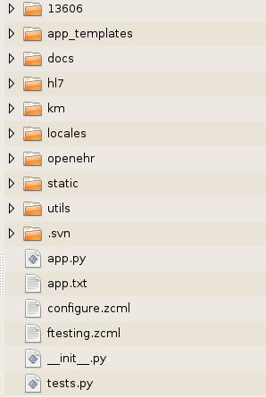

This document is intended to describe the layout and structure of OSHIP. This will informa healthcare application developers regarding the operation of OSHIP as well as how to implement their own applications using OSHIP as a base.
The overall diagram seen in the figure below is at the oship/src/oship level:

The 13606 and hl7 folders are currently place holders for future work to include these models as part of OSHIP. The app_templates folder is where the default OSHIP templates are stored. Notice that there is also an app.py file. These are automatically associated by the Grok machinery. When you create your own application you will create a myapp.py file and a myapp_templates folder. The reasons and processes for this are described in other documents. The docs folder holds this and other OSHIP documentation. The km folder is the knowledge module library for OSHIP. It is explained in detail below. The locales folder contains the i18n translations for OSHIP. The openehr folder contains the source code for the openEHR Reference Model. The static folder is where static files such as images, CSS and javascript files are placed for your application. The utils folder is a place for us to put various utilities needed by OSHIP that may not be available as Python eggs through other sources.